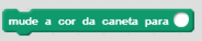
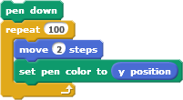

Estabelece a cor da caneta de acordo com o valor especificado


Você pode atribuir à cor da caneta uma variável, tal como  ou um número. Por exemplo, o número 0 corresponde a vermelho, o número 70 é verde, o número 130 é azul e o número 170 é magenta.
ou um número. Por exemplo, o número 0 corresponde a vermelho, o número 70 é verde, o número 130 é azul e o número 170 é magenta.
O valor 0 corresponde à extremidade vermelha do arco-íris e o valor 100 a sua extremidade azul. O intervalo total vai de 0 a 200, e dá a volta no círculo cromático.